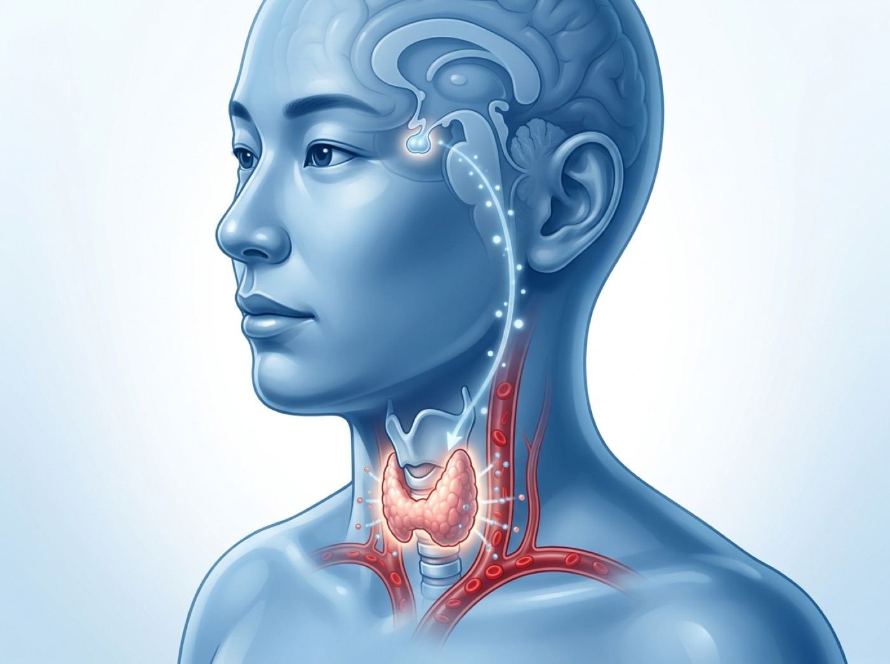

주요 항목 이해하기
주요 항목 이해하기

| 무엇을 보나 | 풀이 | |
|---|---|---|
| TSH | 조절 | 뇌하수체 신호 |
| Free T4 | 호르몬 | 활성 전 단계 |
| T3 | 항진 | 평가에 도움 |
| 항체 | 원인 | 자가면역 확인 |
대표적인 결과 패턴
| 패턴 | 기능저하 쪽 패턴 | |
|---|---|---|
| TSH·호르몬 | TSH 높고 Free T4 낮음 — 갑상선기능저하증 가능 | TSH 낮고 Free T4/T3 높음 — 갑상선기능항진증 가능 |
| TSH만 이상 | TSH만 약간 높음 — 무증상 갑상선기능저하, 재검 필요 | TSH만 낮음 — 초기 항진, 약물 영향, 일시 변화 확인 |
| 증상 | 피로·추위·변비·부종 — 증상과 함께 해석 | 두근거림·체중감소·손떨림 — 빠른 평가 필요 |
| 항체 | TPO 항체(갑상선 과산화효소 항체) 양성 — 하시모토 갑상선염 가능 | TRAb(갑상선자극호르몬 수용체 항체) 양성 — 그레이브스병 가능 |
 검사 전후 주의할 점
검사 전후 주의할 점
결과를 흔들 수 있음
- 비오틴 — 고용량 복용 시 TSH/T4 결과 간섭 가능
- 임신·출산 후 — 정상 범위와 해석이 달라질 수 있음
- 감기·중증 질환 후 — 일시적 변화 가능
- 갑상선약 복용 시간 — 검사 날은 약 먹기 전에 채혈합니다(이미 드셨다면 알려 주세요)
- 재검 — 경미한 이상은 보통 6~12주 후 확인
- 항체 검사 — 원인 감별에 도움
- 초음파 — 결절·갑상선염 의심 시 시행
- 약물 조정 — 임의 시작·중단 없이 진료 후 결정
안정 시 심한 두근거림, 흉통, 숨참, 고열, 심한 손떨림, 갑작스러운 체중 감소가 있으면 갑상선기능항진 평가가 필요합니다. 심한 무기력, 저체온감, 부종, 서맥이 뚜렷한 경우도 진료를 미루지 마세요.
유리 T4가 낮고 TSH가 정상/낮으면 중추성 원인도 평가합니다. 면역항암제 이력과 심한 피로·저혈압은 갑상선 외 부신·뇌하수체 문제도 확인합니다.